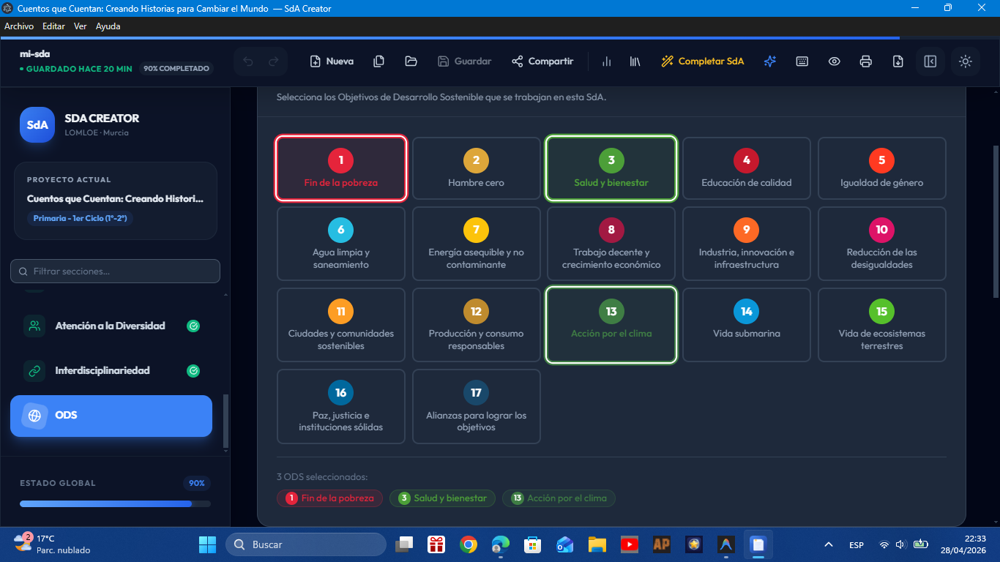
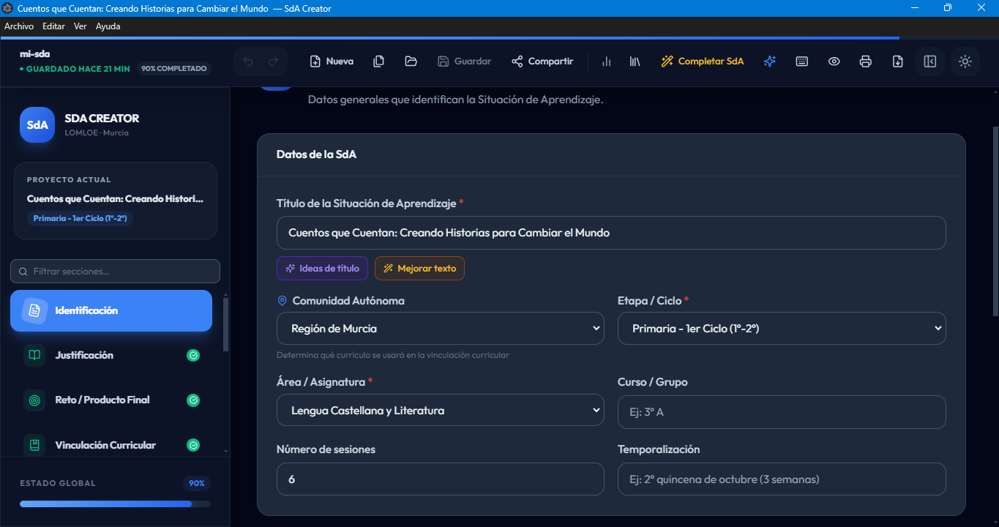
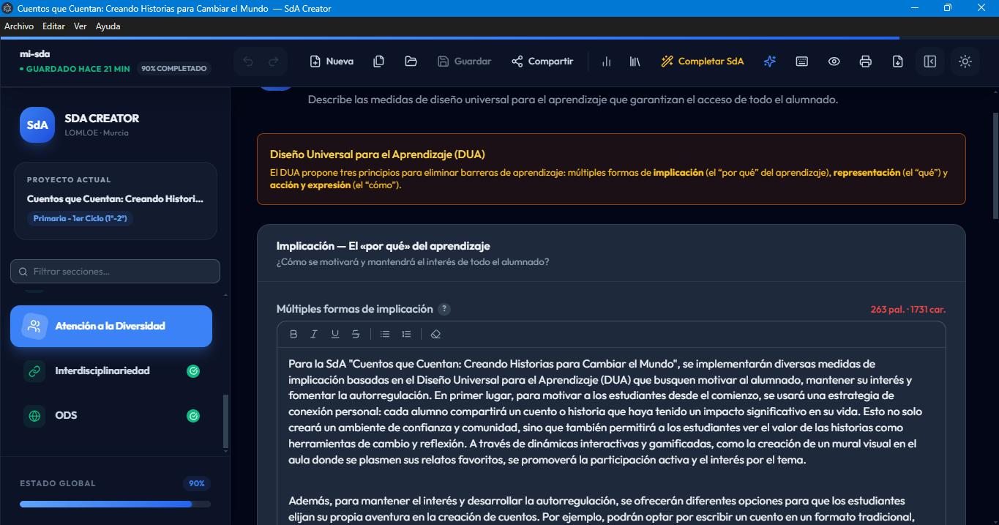
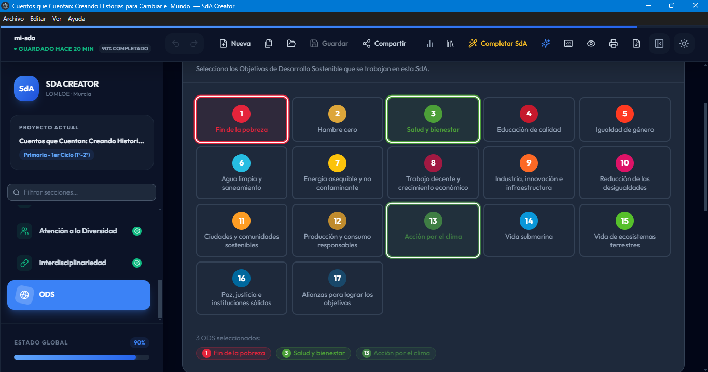
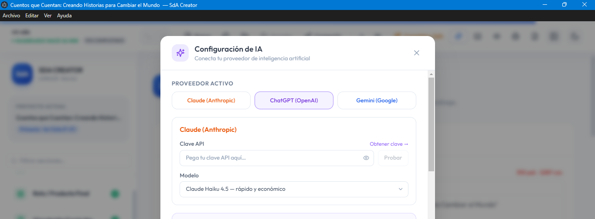
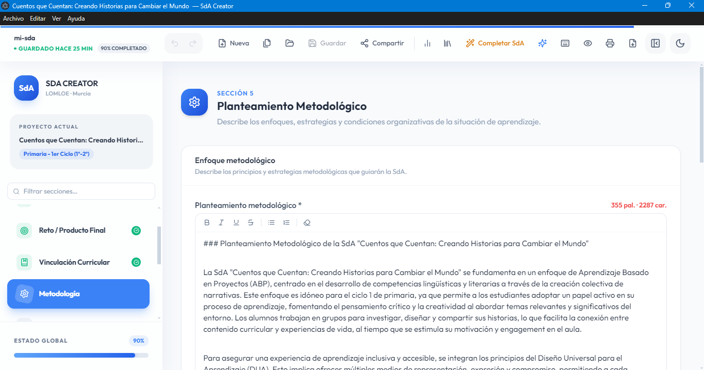
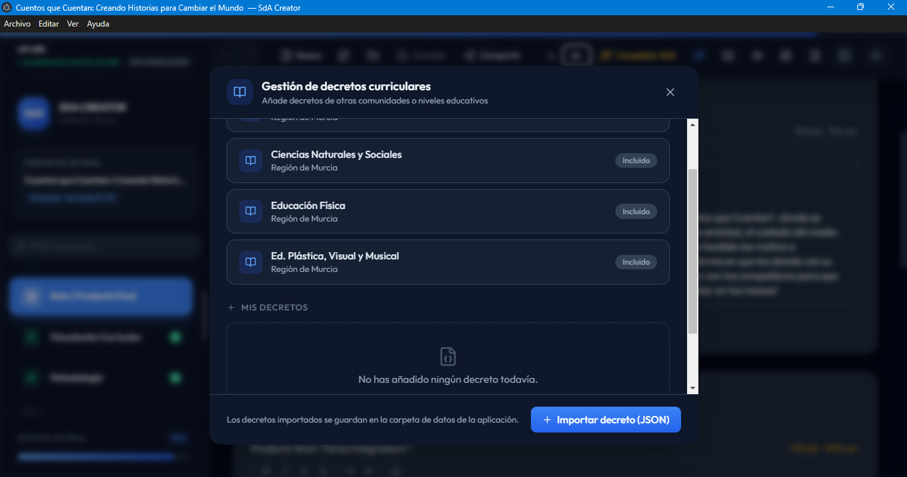
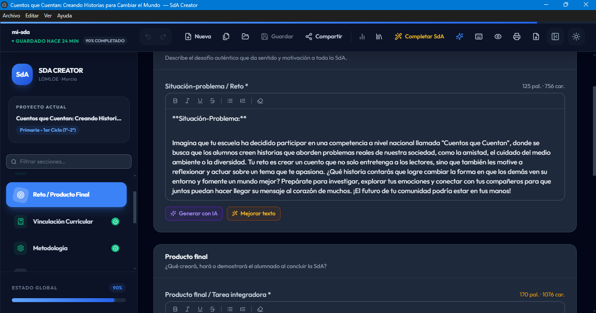

La herramienta definitiva para docentes. Adaptada a la Región de Murcia, con soporte para importar el currículo de cualquier otra Comunidad Autónoma. Cumple con la LOMLOE y exporta a PDF/Word en segundos.
Aplicación de escritorio gratuita. Una vez instalada, se actualiza sola con cada nueva versión. Sin conexión a internet para el modo básico.

Un salto cualitativo en productividad docente. Estas son las principales mejoras que hemos incorporado.
Panel lateral de IA con chat contextual para cada sección. Completa automáticamente campos vacíos con un solo clic o pide sugerencias personalizadas.
Ahora puedes elegir exactamente qué secciones incluir al exportar a PDF o Word. Ideal para borradores, entregas parciales o compartir con compañeros.
Un wizard paso a paso te guía para crear una nueva SdA desde cero, con datos precargados y validación en tiempo real de los campos obligatorios.
Presenta tu SdA completa directamente desde la aplicación, con diapositivas generadas automáticamente. Perfecto para claustros, CCP o coordinaciones.
Guarda instantáneas de tu SdA en cualquier momento y vuelve a cualquier versión anterior. Nunca pierdas tu trabajo con el historial de cambios.
Busca texto en todas las secciones con Ctrl+F. Además: modo foco, notas por sección, temas de color, plantillas personalizadas y estadísticas en tiempo real.
Instálala una vez y olvídate: la aplicación detecta cada nueva versión, la descarga en segundo plano y te avisa para reiniciar. Siempre con las últimas mejoras, sin reinstalar nada.
Genera un cuaderno de trabajo gamificado e imprimible (misiones, retos por niveles y puntos de experiencia) a partir de tus sesiones. Con tarjetas grandes y amplio espacio para escribir, pensadas también para los más pequeños.
Genera documentos impecables en PDF o Word. Listos para entregar a inspección o compartir con tus compañeros.
Estructura adaptada por defecto a la Región de Murcia, con la flexibilidad de incluir el currículo de cualquier otra Comunidad Autónoma. Competencias, Saberes, DUA y ODS perfectamente integrados.
¿Te has atascado? Utiliza el asistente inteligente integrado para que te sugiera actividades o redacte la justificación.
Olvídate del procesador de textos tradicional. Una interfaz fluida, rápida y con modo oscuro que protege tu vista.







Descubre en menos de 2 minutos cómo SdA Creator puede transformar tu forma de planificar.
Navega por las pestañas e introduce tu contexto, saberes básicos y metodología guiado por la interfaz adaptada a la LOMLOE.
¿Te has atascado en la secuencia didáctica? Pídele a la IA integrada que te proponga actividades o redacte la justificación.
Con un solo clic, descarga tu Situación de Aprendizaje perfectamente maquetada en documento Word (.docx) o en formato PDF.
Únete a los docentes que ya están planificando el curso de manera más inteligente.
Para Windows 10/11 (64 bits). Se actualiza automáticamente: siempre tendrás la última versión.